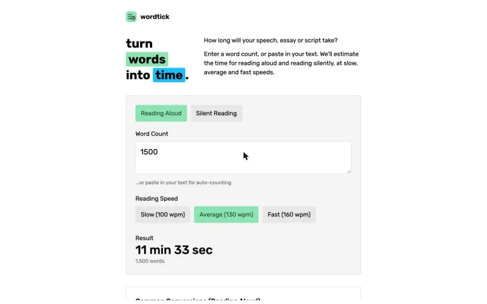
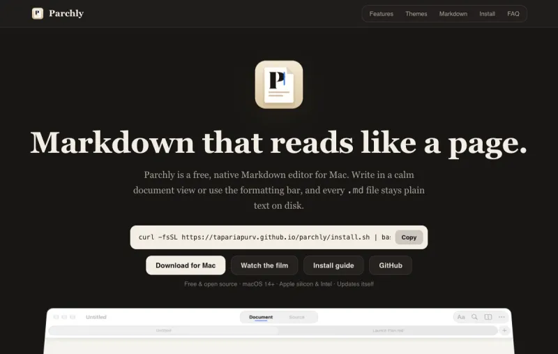
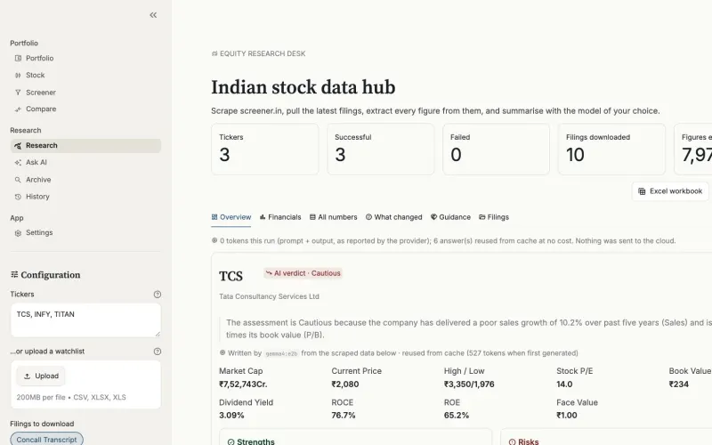
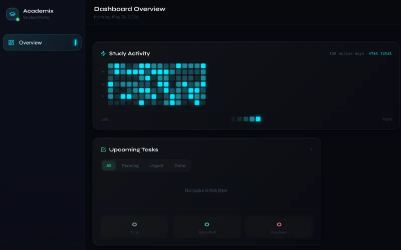
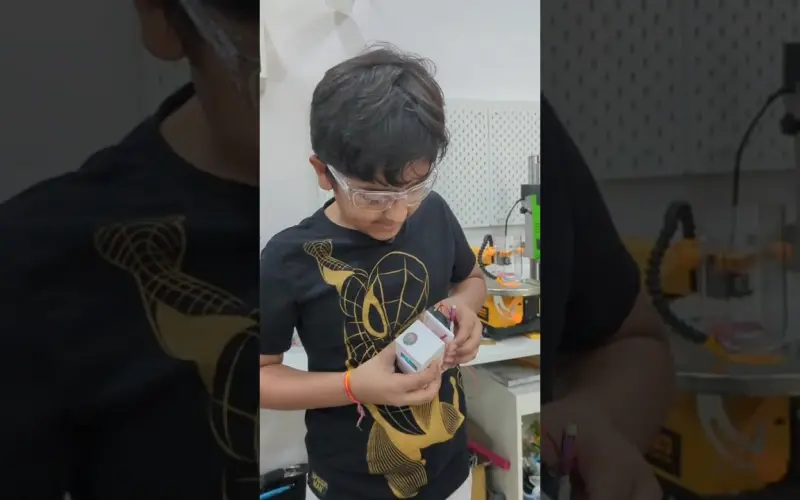
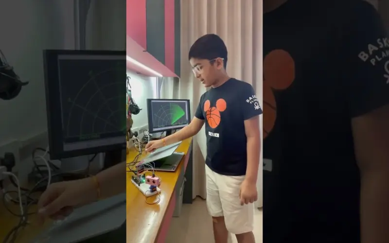

International
International English Olympiad (IEO)
International Rank 1 in Grade 1
School Rank 1 in Grade 2 (39/40)
International Rank 1 in Grade 3 Level 1 (40/40)
Won Rs. 50,000 in Grade 3 Level 2 (40/40, International Rank 1)
01 · Hello, I'm

Hi! I'm Purv, a student from Mumbai. I build apps with AI & Claude Code, design hardware, and write books.
purv@os ~ % I'm a Student
02 · README.md
Purv Taparia is a Mumbai-based student, 5× published author, and self-taught coder who has won International Rank 1 in the English Olympiad and holds Arduino and Anthropic Claude certifications — building hardware, software, and books before finishing primary school.
Hi! I am Purv Taparia, a student from Grade 5 at Chatrabhuj Narsee School, Mumbai. I built this portfolio from the ground up to showcase my creative and technical abilities.
I have many skills in AI — using models like Veo 3.1 and Nano Banana Pro for video and image creation, and AI tools for Excel, PowerPoint and writing. I hold Anthropic's Claude 101, Claude Code 101 and Claude Code in Action certifications.
I program in HTML, CSS, JavaScript, TypeScript, Python, C++ and Swift, build web apps with React and Next.js and native Apple apps with SwiftUI, and build real hardware projects with Arduino and ESP8266. I have published 5 books across Bribooks and Amazon, and write a newsletter on Beehiiv sharing thoughts and updates.
This portfolio is a living document — I add new projects, achievements and books as I complete them, rather than letting it go stale.
Last updated · Live since
purv@os ~ % ls ~/skills --all
03 · Leaderboard
Certified & recognized by
Arduino EducationAnthropic AcademyInternational English Olympiad (IEO)International Cyber Olympiad (ICSO)IPM Mathematics ScholarshipInternational Rank 1 in Grade 1
School Rank 1 in Grade 2 (39/40)
International Rank 1 in Grade 3 Level 1 (40/40)
Won Rs. 50,000 in Grade 3 Level 2 (40/40, International Rank 1)
International Rank 2 in Grade 3
Scored 39/40 marks
Won Rs. 8,333
Achieved 94th Rank in the All-India Open Mathematics Scholarship Examination Mega-Final in Grade 2
3rd Place — 3rd Mumbai Suburban Roller Athletics District Competition
5th Place — 3rd Maharashtra Roller Athletics State Competition
5th Place — 3rd Roller Athletics National Competition
04 · ~/Certificates
Every certificate opens as a PDF, and most can be verified with the issuer.
Passed with 96%
Passed the Arduino Junior Certification exam with 96%, covering electronics fundamentals, circuits, and programming microcontrollers with the Arduino platform.
Completed — Claude Projects, AI workflows, productivity
Completed Anthropic Academy's Claude 101 Certification. Includes topics such as how to work with Claude, use Claude Projects, and boost productivity with Claude.
Completed with a perfect 8/8 quiz score
Completed Anthropic Academy's Claude Code in Action course, scoring a perfect 8/8 on the quiz. Covers Claude Code, hooks, skills, commands, and the .claude directory.
Completed — September 2026
Completed Anthropic Academy's Claude Code 101 course. Covers the agentic loop, Plan Mode, the Explore → Plan → Code → Commit workflow, context management, CLAUDE.md, subagents, skills, MCP servers and hooks.
Passed with 91% — October 2026
Passed the official Arduino Certification exam in Electronics and Physical Computing with 91%, issued by the Arduino Education Team.
05 · git log --all
Everything I've shipped, published and won, newest first. 32 commits since 2022.
06 · ~/Applications

A private, local-first AI workspace for Model UN delegates: chat with your own research with citations, draft position papers, and simulate opposing delegations, all on your computer via Ollama. — September 2026

A free, open-source Pomodoro timer in native SwiftUI for iPhone, iPad, Mac and Apple Watch, with Dynamic Island, widgets and a companion extension that blocks distracting sites. — October 2026

A Duolingo-style app that teaches kids how investing works, with 22 short lessons, streaks and leagues, and a virtual fund of 14 real companies at daily closing prices. — September 2026

A free words-to-time calculator: paste text or enter a word count to see how long a speech, essay or script takes to read aloud or silently, at slow, average or fast pace. Also runs as a Google Docs add-on and a Microsoft Word add-in. — October 2026

An adaptive vocabulary app that uses Bayesian skill estimation and spaced repetition to pick words that challenge without overwhelming. — August 2026

A calm, native Markdown editor for macOS that hides the syntax as you read and brings it back on the line you're editing, with a formatting bar, live preview and 10 themes. — October 2026

An open-source research desk for Indian listed companies: key ratios, filings and news for any ticker, a plain-English verdict from a local Ollama model, and Excel and Word exports. — September 2026

A school performance dashboard with student, teacher, parent and admin portals, covering grades, assignments, charts, a points system and a study planner. — September 2026
An ESP8266 device in a 3D-printed case that lights one NeoPixel per 0.2% market move from the previous close and sounds a piezo past 1%. — August 2026

A generator for 4K–8K wallpapers in any colour: 30 generative styles, live device previews, and lossless PNG export up to 8K. — October 2026

A pocket-sized air quality monitor I built when Delhi's smog hit record highs: an MQ135 gas sensor feeds an Arduino Nano, and a 128×64 OLED shows the live reading with a verdict like “Hazardous”, all in a 3D-printed case. Watch it on YouTube. — November 2025

An ultrasonic sensor on a 180° servo sweeps the room while an Arduino UNO measures distances, and a radar screen I coded in Processing plots every object it detects in real time. — May 2026

A GSAP-animated cocktail brand landing page — scroll-triggered timelines and SplitText reveals built with React and Tailwind CSS, deployed on Vercel. — August 2026
07 · ~/Library
I am a published author with 5 books across Bribooks and Amazon — covering fiction, adventure, and finance for young readers. Writing is a core part of who I am, alongside my technical work. I also publish a newsletter on Beehiiv →
Finance / Non-fiction · Amazon
A beginner-friendly guide to the stock market written for young readers — covering investing fundamentals, how markets work, and financial literacy concepts in simple language.
Buy on Amazon ↗Adventure / Sci-Fi · Bribooks
This book has 2 sections: the first is about when me and my friends get teleported to Dubai while the second section is about being teleported to a futuristic city alone.
Read on Bribooks ↗Educational fiction · Bribooks
An educational book that teaches readers about devices such as air conditioners, smartphones, and more.
Read on Bribooks ↗Short story collection · Bribooks
Includes five stories written by me. Some are about beaches, a picnic, a magical carpet, etc.
Read on Bribooks ↗School-life fiction · Bribooks
My first book. It is about a graduation day of a person who happens to win student of the year too.
Read on Bribooks ↗08 · Messages
Two things people ask me most, answered in a chat window.
Who is Purv Taparia?
Purv Taparia is a student from Grade 5 at Chatrabhuj Narsee School, Mumbai, India, who is a 5x published author, an International Rank 1 English Olympiad winner, a self-taught coder working with HTML, CSS, Python, C++ and Arduino, and the writer of a newsletter on Beehiiv.
Is this portfolio actively maintained?
Yes. This portfolio was first published in March 2025 and is updated regularly as Purv completes new projects, achievements, and publications. It was last updated on 2 November 2026.
09 · New message
Feel free to reach out for collaborations or just to say hi! I am open to collaborations, projects, and conversations — based in Mumbai, India.